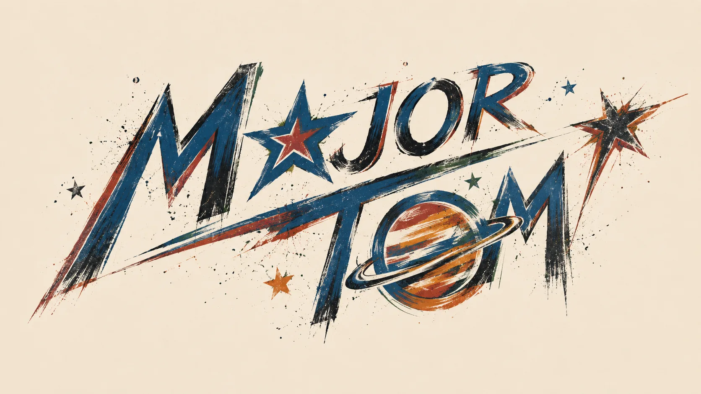
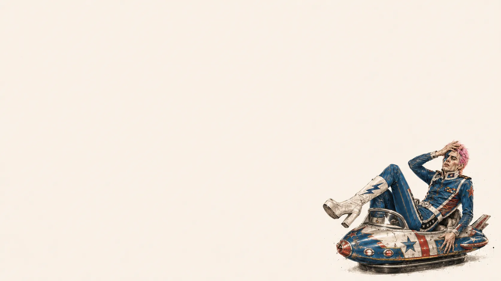
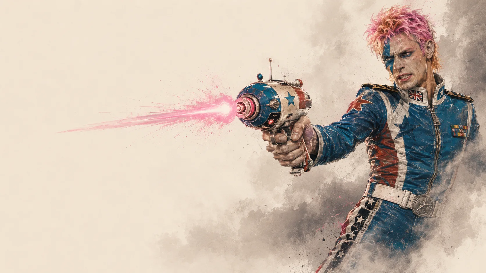
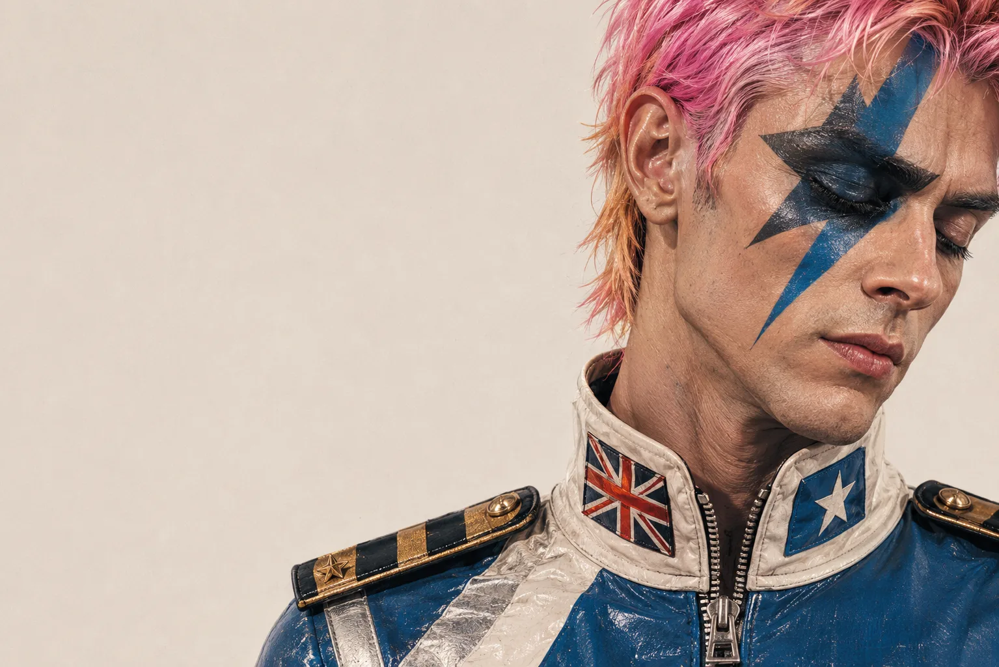
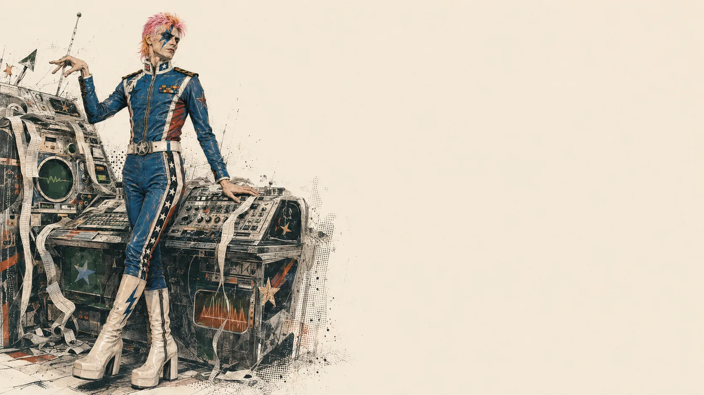
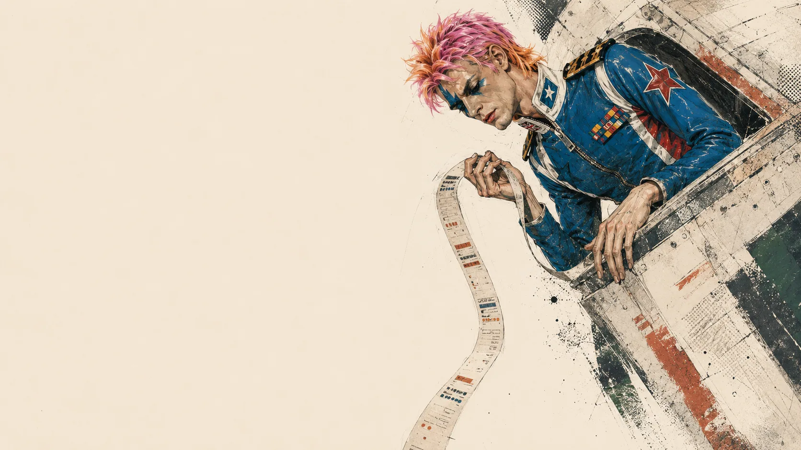
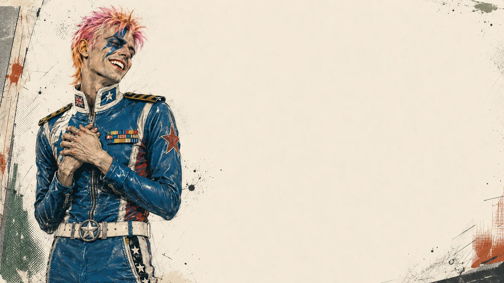
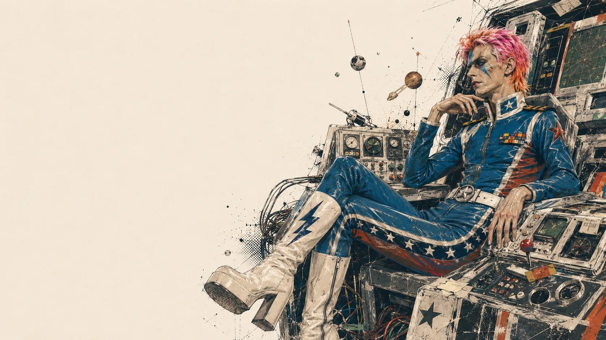
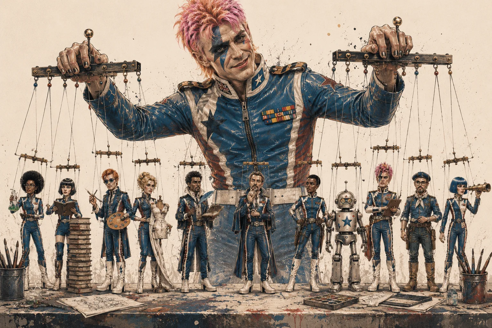

You already know the agentic OS. The compounding knowledge, shared context, fewer repeated explanations. That part works.
Major Tom is what happens when that brain gets a body.
He is already running. Not waiting to be opened. Not sitting in a tab. Running on a server, with access to Ground Control, watching a schedule, ready to receive a message from wherever you are.
You are driving to a shoot. A client idea fires. You pull out your phone, voice it at Tom.
By the time you park, he has filed a structured note in Ground Control, cross-referenced it against the relevant client folder, surfaced the two questions you will need to answer to move it forward, and drafted a Slack update if it affects the team.
You did not sit down. You did not open a laptop. You talked.
That is the shift. The future is already here — it's just not evenly distributed. We're distributing it.

One sentence: Ground Control is the memory. Tom is the hands.

Tom is not a single AI model. He is an orchestration layer that routes work to whichever brain is right for the task — and that distinction matters more than it sounds.
Hermes, the open-source framework Tom runs on, was built by Nous Research with a specific design principle: the agent should not care where the intelligence comes from. At the agent layer, Hermes is model-agnostic by design. Whether tokens flow from OpenAI's GPT, Anthropic's Claude, Google's Gemini, or a local model running on your own hardware — Tom handles it the same way. Swap the model; the workflows, memory, scheduled tasks, and tools stay intact.
NVIDIA described it this way in a May 2026 write-up: "Hermes is an active orchestration layer, not a thin wrapper, enabling persistent, on-device agents instead of task-by-task execution." Their benchmark finding: "Developer comparisons using identical models across frameworks consistently show stronger results in Hermes."
What this unlocks in practice:
The Mac Mini arriving in August will make local model routing real for us. Run a 27B-parameter model locally for background operations. Save the paid API calls for the work that actually needs frontier-level intelligence. The hardware choice and the intelligence choice stop being the same decision.
This is what it means to say Tom is a harness, not a model.
Hermes v0.6.0 introduced multi-agent orchestration — the ability to spawn specialist workers under a single orchestrating intelligence.
When Tom receives a complex task, he does not try to do it all in one long chain. He analyzes it, identifies the right work breakdown, and fires specialist worker agents in parallel — each receiving only the context relevant to their piece of the problem. They work simultaneously. Results flow back through a structured message-passing layer. Tom synthesizes the final output himself, rather than having workers summarize each other and introduce compounding errors. According to Hermes documentation, this prevents the "telephone game degradation that plagues naive multi-agent setups."
Each specialist can run on a different model. One worker might use a long-context model for document analysis. Another uses a structured-reasoning model for logic and comparisons. Tom routes, aggregates, and decides.
This is not an agent zoo. It is a directed crew with clear roles, resource-aware scheduling (configurable concurrency prevents runaway spawning), and a single point of accountability. Tom is still the one that reports back to you.
Major Tom is the first character. The crew is the possibility.

Most software is static. You use it, and it stays exactly as capable as the day you installed it.
Hermes is designed differently. It has a learning loop built into its architecture — an observe → distill → reuse → refine cycle that turns repeated work into permanent capability.
Here is how it works: when you walk Tom through a complex workflow three or more times, he creates a SKILL — a structured procedure document that captures the steps, pitfalls, and verification logic. That skill becomes a permanent part of his toolkit, available as a slash command, loaded only when it is relevant. When he hits a dead end on a task and finds a workaround, he patches his own skill to avoid that dead end next time. Failed approaches are pruned. Successful paths are reinforced.
Hermes's documentation is plain about the ambition: "Hermes creates and improves skills from experience, getting more capable the more you use it."
Beyond procedural skill-building, Hermes integrates the Atropos reinforcement learning pipeline — a full RLHF and DPO implementation. Rate a response positively or negatively. Mark a correction. Let it collect interaction trajectories. Over time, this loop can improve the underlying model's behavior on your specific use cases, not just add procedural shortcuts on top of a static model.
What this means for us: the more we use Tom on real TSD work — proposals, meeting prep, client status, research memos — the more calibrated he becomes to how we actually operate. A generic agent at deployment, a TSD-specific operator over time.
Before: desk, browser open, remembering to check in.
Now: your phone is the interface. Voice is enough.
In the car before a client call:
He reads the current client folder. You walk in prepared.
Post-meeting, driving back:
Ground Control is updated. You typed nothing.
Random idea, mid-walk:
By the time you look at it, there is something to react to.
This is not hypothetical. This is Telegram plus Hermes plus Ground Control, working now.
The strongest prompt is not "what do you think?"
It is: "Chase this until it is done, blocked, or needs a human decision."
Tom can define the task, find source material, research externally, build the working document, check his own output, update Ground Control, post the Slack update, schedule the follow-up, and surface the approval decision at the right moment.
Tom, chase down the best way to produce generative influencer videos at scale for Ernest. Tools, costs, workflow options, QC risks, operator requirements, pilot plan. Save it as Markdown and tell me what still needs a human call.
That is a mission. Not a Q&A.

Most people understand that AI can draft a newsletter section when asked.
What most people have not seen is an agent that runs a publication.
Tom, on a weekly cadence, no prompt required:
The hard part is not pressing publish. The hard part is remembering, gathering, filtering, writing, and keeping the habit alive week after week. Tom holds all of that.
For clients who need a regular content presence without the capacity to maintain one, this is a real solution. For Linea Lab, it is a productized offer.
Instead of waiting to be asked, Tom watches and reports.
For a client content operation: Tom checks which posts and emails performed best last month, identifies the shared characteristics — topic, tone, format — cross-references with the client's positioning, and surfaces a content brief for the next cycle based on what actually resonates. Not what someone assumed would work. What the data shows.
He does this on a set schedule, every week, without being asked.
Applied to The Studio Deux: Tom watches our own LinkedIn analytics and feeds that into the next content cycle. Not guessing. Watching.

What we are building for ourselves, we can build for others.
The Studio Deux can offer clients their own configured agent — a private AI operator that knows their business, their documents, their workflows, and their voice. Not a generic chatbot. A tuned instance built for their specific operation.
This is AI adoption done right: not "here is a tool, good luck," but "here is an agent we built for your specific operation, and here is how to use it."
The creative production business brought clients to us. The agent business keeps them — and scales differently.
Tom can run work on a schedule without anyone remembering to ask:
Simple checks run as lightweight scripts — no model call, no cost. Tom uses frontier intelligence only when interpretation actually matters. Stay quiet unless there is something genuinely useful. That instruction turns him into a calm operations layer, not a pest.

Right now: Tom runs on Brandon's personal ChatGPT Pro account. It works for testing, but it means all usage flows through one subscription.
The better setup: A shared OpenAI account for The Studio Deux — one company account all three of you can access, with cleaner billing, no single-person dependency, and a proper foundation for shared workflows.
Suggested approach: Put Tom through real work first. When the value is clear, move to the shared account.
The promise: less forgotten context, fewer dropped balls, ideas that survive the walk from the parking lot to the desk, client meetings you walk out of already followed up, a publication that runs itself, and — with time and use — an agent that knows The Studio Deux the way a long-tenured employee does.

On how Hermes actually works
On the broader reality and potential of agents
